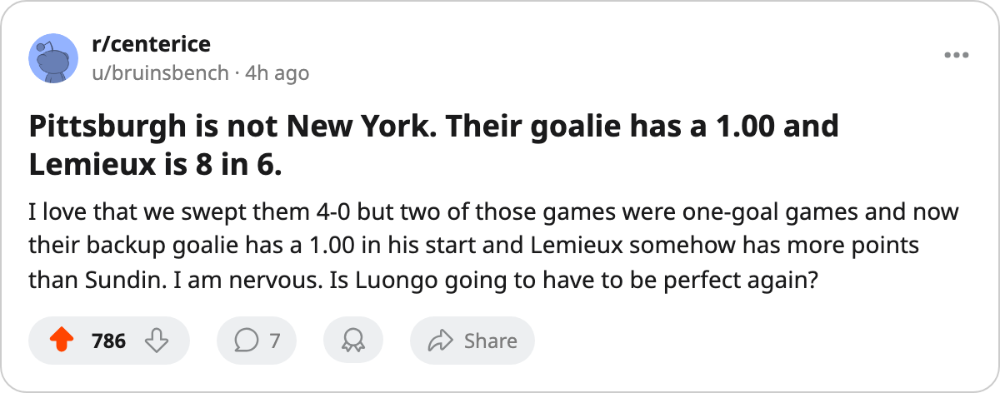

ROUND 2 PREVIEW: Abid and Renberg meet their old clubs, and Pittsburgh brings a goaltender with a 1.00
Game 1 is tomorrow at the Air Canada Centre. Two ex-Leafs and one ex-Penguin are in the lineup. The series opened 4-0-0 for Toronto this season
 Sam OkaforLeafs beat reporter · Queen City Telegram
Sam OkaforLeafs beat reporter · Queen City Telegram
 Toronto Maple Leafs and
Toronto Maple Leafs and  Pittsburgh Penguins open their Round 2 series tomorrow at the Air Canada Centre. Game 2 follows Saturday night, also at home, before the series shifts to Pittsburgh for Games 3 and 4.
Pittsburgh Penguins open their Round 2 series tomorrow at the Air Canada Centre. Game 2 follows Saturday night, also at home, before the series shifts to Pittsburgh for Games 3 and 4.
 Ramzi Abid80 played for Pittsburgh until January 25. He left for Toronto mid-season and scored 20+46=66 points across all 82 games this year, the best point total of any regular Leaf outside Gaborik and Sundin. He faces his former club on home ice for the first time.
Ramzi Abid80 played for Pittsburgh until January 25. He left for Toronto mid-season and scored 20+46=66 points across all 82 games this year, the best point total of any regular Leaf outside Gaborik and Sundin. He faces his former club on home ice for the first time.  Mikael Renberg75 left Toronto on the same date and now wears a Pittsburgh sweater. The two swaps, made on 2005-01-25, give this series its first real storyline.
Mikael Renberg75 left Toronto on the same date and now wears a Pittsburgh sweater. The two swaps, made on 2005-01-25, give this series its first real storyline.
Abid's season: 20 goals, 46 assists, 66 points, $0.40M. He leads all Leafs with a plus-6 on the Bureau's Development Index alongside Gaborik and sits 86th overall on the Book. His 46 assists put him third on the club behind Sundin and Mogilny.
Pittsburgh's playoff identity
Pittsburgh Penguins eliminated  New Jersey Devils 4-2 in a series where five of the six games were decided by a single goal. They won both games at home in Game 3 and Game 4 by 2-1 margins, then dropped Game 5 in Newark before closing Game 6 on the road, 3-2 in overtime.
New Jersey Devils 4-2 in a series where five of the six games were decided by a single goal. They won both games at home in Game 3 and Game 4 by 2-1 margins, then dropped Game 5 in Newark before closing Game 6 on the road, 3-2 in overtime.
| TOR | PIT | |
|---|---|---|
| Regular season record | 59-13-5 (133 pts) | 24-34-11 (85 pts) |
| Round 1 result | 4-1 NYI | 4-2 NJ |
| Starting goalie save % | Luongo .963 | Hedberg .907 |
| Top scorer | Gaborik 8 pts in 5 | Lemieux 8 pts in 6 |
 Johan Hedberg88 is the starting goaltender with a 3-2 record, a 2.00 GAA and a .907 save percentage. Sebastien Caron76 started Game 1 in Newark, stopped every shot he faced in a 3-2 loss, and posted a 1.00 GAA and .952 across his one appearance. The Pittsburgh coaching staff has used both goaltenders, so you don't know who's in net until morning scratches.
Johan Hedberg88 is the starting goaltender with a 3-2 record, a 2.00 GAA and a .907 save percentage. Sebastien Caron76 started Game 1 in Newark, stopped every shot he faced in a 3-2 loss, and posted a 1.00 GAA and .952 across his one appearance. The Pittsburgh coaching staff has used both goaltenders, so you don't know who's in net until morning scratches.
 Mario Lemieux85 is the engine. 2+6=8 in 6 games at 39 years old. He is the oldest player on either side of this series and the leading scorer on the 7th seed. Eric Meloche75, the Calder Trophy winner from last season, has 4+2=6.
Mario Lemieux85 is the engine. 2+6=8 in 6 games at 39 years old. He is the oldest player on either side of this series and the leading scorer on the 7th seed. Eric Meloche75, the Calder Trophy winner from last season, has 4+2=6.
What Toronto needs
The regular season record is 4-0-0, 20-9 on goals. Two of those four games were one-goal finishes. Pittsburgh kept it close in a sweep that doesn't look close on paper.
 Roberto Luongo97 has been excellent. 1.41 GAA, .963, 4 wins in 5 starts. The clincher exposed a problem on the other end: 13 shots in Game 5 was the lowest output of the series. Against a Penguins team that played close games all spring against a 39-win New Jersey squad, 13 shots will not be enough.
Roberto Luongo97 has been excellent. 1.41 GAA, .963, 4 wins in 5 starts. The clincher exposed a problem on the other end: 13 shots in Game 5 was the lowest output of the series. Against a Penguins team that played close games all spring against a 39-win New Jersey squad, 13 shots will not be enough.
Pittsburgh Penguins is without  Guillaume Lefebvre70 (foot, back 2005-05-15) and
Guillaume Lefebvre70 (foot, back 2005-05-15) and  Kris Beech70 (elbow, back 2005-05-19). Beech's absence forced a shuffle: Rico Fata70 moved to center, Mike Eastwood slid up to 2C, and Brian Holzinger75 filled the 3C slot. The lineup that closed Game 6 against New Jersey is not the same one that opened Game 1.
Kris Beech70 (elbow, back 2005-05-19). Beech's absence forced a shuffle: Rico Fata70 moved to center, Mike Eastwood slid up to 2C, and Brian Holzinger75 filled the 3C slot. The lineup that closed Game 6 against New Jersey is not the same one that opened Game 1.
Toronto Maple Leafs is healthy. No Leaf appears on the injured list. Game 1 puck drop is tomorrow evening at the Air Canada Centre.
